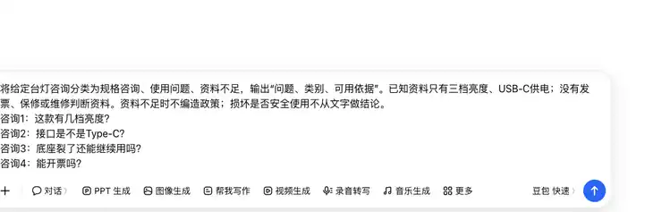
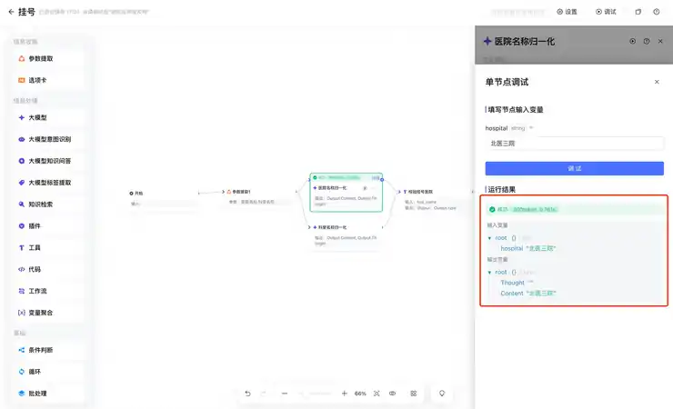

第六章｜项目制作与答辩 · 第25次课 · 10学时（5次制作）
小流程改造项目制作工作台
00 知识回顾
前面几课练了任务识别、材料整理、追问、变量接力、测试和说明。现在用五次制作课，把这些方法用到同一个小组作品里。
01 任务预告
大作业：改造一个校园或办公小流程。 2—3人一组，制作期约2.5周。选择一个确实会用的需求，完成“材料输入→AI处理→可用结果”的流程。无代码工具或清楚可复现的分步AI操作均可；编程和自动化只作拓展。
成果： 一份项目包，包含流程图、提示词或操作步骤、样例输入输出、关键截图、测试记录和个人分工。完成主路径和一种实际相关的异常处理，准备现场演示。使用模拟或脱敏材料，不需要真实发布、发送通知或使用学生个人信息。
02 基础概念
1｜原流程与改造：说清改的是哪个动作
先说明原来怎样完成任务，再指出AI负责哪一段。没有时间测量就比较步骤和重复操作，不编造“效率提升百分比”。原流程可以是自己真实做过的资料整理或内容制作。
例子： 原来把五条商品咨询逐条归类再写回复；改造后先由AI分成规格、使用、售后三类，再根据给定规则生成回复草稿。
2｜最小可用作品：先让一条路径能用
最小可用作品能处理一份典型材料并产生用途明确的结果。先做到这一点，再增加异常分支或工具调用，不以接很多软件当作完成。
例子： 先让“商品咨询→分类→回复草稿”跑通，再加“问题不在资料范围内→提示补材料”。
3｜过程证据：留下能解释选择的材料
过程证据帮助说明成员做了什么、为什么修改。保留关键版本、一次测试差异和本人负责的步骤即可，不要求把每次点击都录下来。
例子： 展示原来把“发票问题”归错类的一次结果，再说明怎样改分类规则和重测。
4｜冻结与排练：稳定用来展示的版本
冻结是确定答辩使用的材料、规则与操作顺序。排练时按这个版本运行，确认每位成员都知道自己操作哪一步；临近展示不不断增加功能。
03 核心案例
教师示范｜办公室商品咨询整理助手
课堂模拟底料： 产品为桌面台灯，已知三档亮度、USB-C供电；规则只说明正常使用和配件，不提供保修条款或维修判断。
咨询1：这款有几档亮度？
咨询2：接口是不是Type-C？
咨询3：底座裂了还能继续用吗？
咨询4：能开票吗？
操作①｜选清楚的输出
把“自动客服”缩为“咨询分类＋回复草稿”。分类使用“规格咨询、使用问题、资料不足”三种；回复只能使用给定资料。底座损坏不判断安全使用，发票问题缺规则就说明资料不足。

先输入四条台灯咨询和分类规则；已知规格与缺少的资料分开写。
操作②｜用两步完成小作品
在元器沿用两模型接力，第一步整理问题类别，第二步根据资料写回复，最后由回复节点显示；也可以在豆包或千问分别执行两步，手动复制中间清单。下列提示词用于第一步，自己把给定问题粘贴进去。
将给定台灯咨询分类为规格咨询、使用问题、资料不足，输出“问题、类别、可用依据”。已知资料只有三档亮度、USB-C供电；没有发票、保修或维修判断资料。资料不足时不编造政策；损坏是否安全使用不从文字做结论。
问题：【粘贴本页四条咨询】
第二步读取这个清单，为每条写一句回复。教学样例： 亮度问题引用三档；接口问题统一为USB-C；损坏问题建议停止自行判断并联系正规售后；发票问题提示补充商家开票说明。

单节点调试面板先填入本次变量，再点击调试；这里的hospital是教程示例变量。
操作③｜展示项目包里最有用的三件东西
看流程图知道先分类后回复；看输入输出知道材料对应；看测试记录知道“资料不足”怎样处理。一次演示不用逐个翻完所有文件。

运行结果在节点详情里展开；演示时同时说明本次输入和该步骤输出。
案例参考： 快递100智能体原作者教程与元器大模型节点。本课取“小需求分工、材料决定回复”的方法，不复制业务接口与成绩数据。
04 实践任务｜五次制作课完成同一个作品
先选一个有用的小题目
| 方向 | 可做的题目 | 主要结果 |
|---|---|---|
| 校园服务或活动 | 实习常见问题整理；比赛通知转成报名要点；学习资料问答 | FAQ、要点卡或答复草稿 |
| 办公室资料处理 | 商品咨询归类；零散工作记录转周报；两版产品说明比较 | 分类回复、周报或差异表 |
| 社团内容运营 | 自摄照片转图文草稿；一份素材转封面与分镜；旧内容改成另一平台表达 | 图文或短视频内容草稿 |
选题要有可取得的材料和能展示的结果。想不到题目时，可以做教师案例的另一种商品咨询，不必假装组织一场没人参与的活动。
制作①｜选题和分工
确定使用者、材料和主要结果。用一份材料做出原有手工版本，再写“哪一步准备交给AI”。每人负责一段实际操作，如材料整理、节点搭建、内容生成或测试与说明；两人组可合并职责。
制作②｜画流程，准备材料
画出输入→处理→结果，把每步用什么材料写在框旁。准备一条正常样例和一条与任务有关的异常样例：可能是缺关键输入、材料冲突或超出资料范围，不套人数地点检查。
制作③｜首次跑通
先完成主路径。用元器等国内无代码工具搭建，或按清楚的提示词分步操作。记录关键输入、输出和一两张能说明连线或操作状态的图，不把聊天接力说成自动化。
制作④｜测试并改一处有效问题
运行正常与异常样例。表格只保留输入、预期、实际与修改要点。有问题就修规则、材料或绑定，再跑正常路径；全部符合预期时，用一个不同写法的新材料看适用范围。
制作⑤｜固定作品，排练演示
固定项目材料与规则，整理一页使用说明。每位成员操作自己负责的一步，并能解释一次选择或修改。排练“展示用途→正常运行→异常处理→本人贡献”，不临时增加新系统。
项目包里保留什么
| 材料 | 要说明的事情 |
|---|---|
| 流程图与提示词/步骤 | 每步怎么做、材料怎么传过去 |
| 样例输入输出与关键截图 | 正常路径实际产生什么、软件处于什么状态 |
| 测试记录 | 异常输入怎样处理、修过什么问题 |
| 分工和使用说明 | 每人负责什么、别人如何照此使用 |
可复制的项目启动要求：
我们有2—3人，准备用约2.5周改造一条校园或办公小流程。
选题：【写具体题目】
使用者：【谁需要这个结果】
现有材料：【粘贴一份模拟或脱敏材料】
想要结果：【写清成果类型】
请把项目缩到一条能现场演示的主路径，说明每步材料和动作，再给一个与本任务相关的异常样例。我们自己选择工具和分工；不要设计真实发送、付费或公开发布功能，不编造效率数据。
05 本课总结
完成一个小而可用的项目，比列很多未实现功能更重要。最终看主路径、异常处理和每位成员的实际贡献，五次制作围绕同一个作品持续完善。
下节预告： 两次答辩课展示正常与异常路径，并回答关于材料、操作和分工的问题。